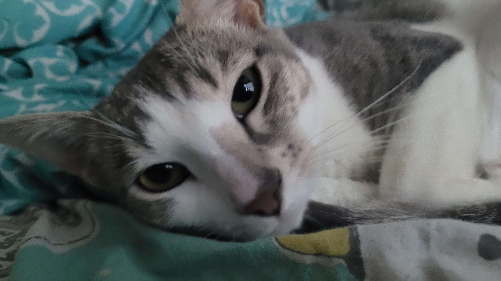
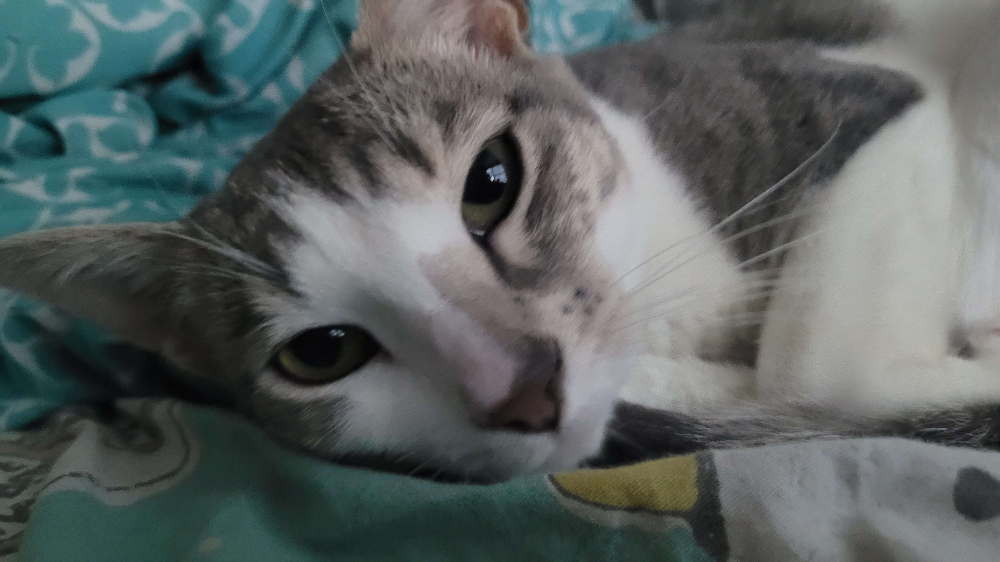

GiGi (or occasionally Regina George) is one of the inside cats. She is an incredibly strange one, a little skittish but also loves attention, and frequently kneads with all 4 paws (the only reason she isn't a menace is because she has trimmed claws). She absolutely hates being picked up, and will come to you herself if you stay still long enough.
 
